1 DeepSeek-AI
2 北京大学计算机学院，多媒体信息处理全国重点实验室
对于 MoE 模型，专家负载不均衡会导致路由坍塌或计算开销增加。现有方法通常使用辅助损失来促进负载均衡，但较大的辅助损失会在训练中引入不可忽视的干扰 gradient，从而损害模型性能。为了在控制负载均衡的同时不在训练中产生不期望的 gradient，我们提出 Loss-Free Balancing，其特点是采用无辅助损失的负载均衡策略。具体来说，在进行 Top-k 路由决策之前，Loss-Free Balancing 首先为各专家的路由分数施加一个专家级偏置。通过根据各专家近期的负载动态更新其偏置，Loss-Free Balancing 可以持续维持均衡的专家负载分布。此外，由于 Loss-Free Balancing 不产生任何干扰 gradient，它还提高了通过 MoE 训练所能获得的模型性能上界。我们在参数量最高为 3B、训练 token 数最高为 200B 的 MoE 模型上验证了 Loss-Free Balancing 的性能。实验结果表明，与传统的辅助损失控制负载均衡策略相比，Loss-Free Balancing 同时实现了更好的性能和更好的负载均衡。
MoE 架构已成为一种很有前景的方案，用于在扩大 LLM 参数规模时控制计算成本。近期将 MoE 应用于基于 Transformer 的模型（Vaswani et al., 2017）的工作，已经成功地将语言模型扩展到相当大的规模（Shao et al., 2024; DeepSeek-AI et al., 2024; Dai et al., 2024; Fedus et al., 2021; Lepikhin et al., 2020），带来了显著的性能提升。
然而，训练 MoE 模型始终会面临负载不均衡的情况，这可能导致路由坍塌（Shazeer et al., 2017）或计算开销增加（Fedus et al., 2021; Lepikhin et al., 2020; Shazeer et al., 2017）。为了避免不均衡路由，现有方法（Fedus et al., 2021; Lepikhin et al., 2020）通常使用辅助损失来促进均衡的专家负载。尽管辅助损失可以缓解训练中的负载不均衡，它也会引入与语言建模目标相冲突的不期望的 gradient。这些干扰 gradient 会损害模型性能，因此现有 MoE 方法始终需要考虑负载均衡与模型性能之间的权衡。
本文提出 Loss-Free Balancing，这是一种无辅助损失的负载均衡策略，旨在保持对专家负载均衡的控制，同时不引入干扰 gradient。Loss-Free Balancing 的特点是交替进行 token 路由与偏置更新。如图 1 所示，（接第 2 页）
∗ 在 DeepSeek-AI 实习期间完成贡献。
⋄ 通讯作者。
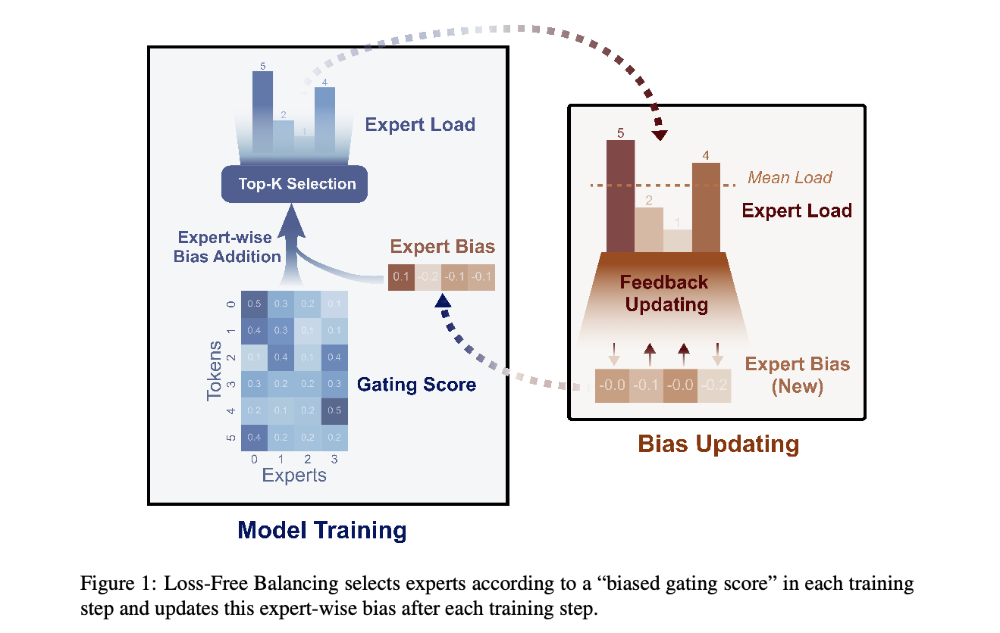
（接第 1 页）在 MoE 的 Top-k 路由决策之前，Loss-Free Balancing 首先为原始路由分数施加专家级偏置，得到带偏置的门控分数；这些分数决定了训练过程中每个 token 的实际路由目标。这些专家级偏置会根据近期训练 token 上观察到的专家负载持续更新，其中高负载专家的偏置会降低，低负载专家的偏置会提高。通过这种动态更新策略，Loss-Free Balancing 确保带偏置的门控分数能够持续产生均衡的路由结果。与辅助损失控制的负载均衡策略相比，Loss-Free Balancing 不会引入破坏主要语言建模目标的不期望的 gradient，因此其训练过程噪声更少，也更友好。
为了验证 Loss-Free Balancing 的性能，我们从头训练了在 100B token 上训练的 1B 参数 MoE 语言模型，以及在 200B token 上训练的 3B 参数模型。实验结果表明，Loss-Free Balancing 得到的 MoE 模型，其验证损失优于传统辅助损失控制的模型。同时，在保持性能优势的情况下，Loss-Free Balancing 还在全局和 batch 层面实现了显著更好的负载均衡，并且天然兼容 EP；EP 通常用于训练超大规模 MoE 模型。
目前主流的 MoE 架构（Lepikhin et al., 2020; Fedus et al., 2021; Dai et al., 2024）将标准 Transformer 中的 MLP 层替换为 MoE 层。在 MoE 层中，使用 Top-k 路由来为每个 token 选择专家。设 \(u_{t}\) 表示输入到一个具有 \(N\) 个专家的 MoE 层中的第 \(t\) 个 token，（接第 3 页）
（接第 2 页）输出 \(h_{t}\) 按如下方式计算：
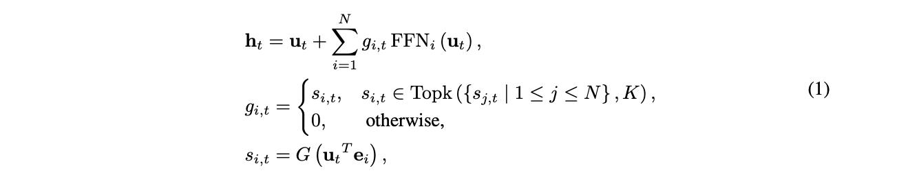
其中 \(G\) 是非线性的门控函数，\(e_{i}\) 是第 \(i\) 个专家的中心向量。
辅助损失。不受控制的路由策略容易出现负载不均衡，这有两个显著缺点。首先，存在路由坍塌（Shazeer et al., 2017）的风险，即模型持续只选择少数专家，妨碍其他专家得到充分训练。其次，当专家分布在多个设备上时，负载不均衡会加剧计算瓶颈。为了处理这些问题，通常使用辅助损失（Fedus et al., 2021; Lepikhin et al., 2020）来控制负载均衡。对于长度为 \(T\) 的序列，辅助损失定义如下：
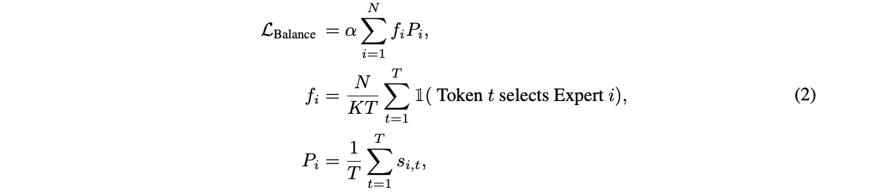
其中 \(N\) 是专家总数，\(K\) 是每个 token 选择的专家数量，\(s_{i,t}\) 是专家 \(i\) 对 token \(t\) 的路由分数，\(f_{i}\) 表示路由到专家 \(i\) 的 token 比例，\(P_{i}\) 表示专家 \(i\) 的平均门控分数，\(\alpha\) 是控制辅助损失强度的超参数。
负载均衡与模型性能之间的困境。上述辅助损失可以促进负载均衡，但作为额外的正则项，它也会干扰语言建模训练。不使用辅助损失，或者采用较小的辅助损失系数 \(\alpha\)，可能导致较差的均衡；而较大的 \(\alpha\) 会损害训练，导致次优性能。为了说明这一困境，我们在图 2 中展示了负载均衡与模型性能之间的关系。我们将 \(\alpha\) 分别设为 1e-2、1e-3、1e-4 和 0，并展示对应的 \(MaxVio_{global}\)，它衡量负载均衡程度，其计算细节见第 4.1 节。如图所示，较小的 \(\alpha\) 导致路由坍塌，影响模型效率，并可能导致某些专家未被充分学习或利用；而较大的 \(\alpha\) 可以控制负载均衡，却显著降低模型性能。为了打破这一困境，我们提出 Loss-Free Balancing 作为解决方案：它直接控制专家负载均衡，但不会引入语言建模损失的 gradient 之外的非预期 gradient。
为了提供一种更好的负载均衡替代方案，使其不直接干扰来自训练目标的主要 gradient，我们提出 Loss-Free Balancing，它根据各专家的均衡状况直接调整其门控分数。如图 1 所示，我们为每个专家的门控分数 \(s_{i,t}\) 添加专家级偏置项 \(\{b_{i}\}^{N}_{i=1}\)，并使用带偏置的分数来确定（接第 4 页）
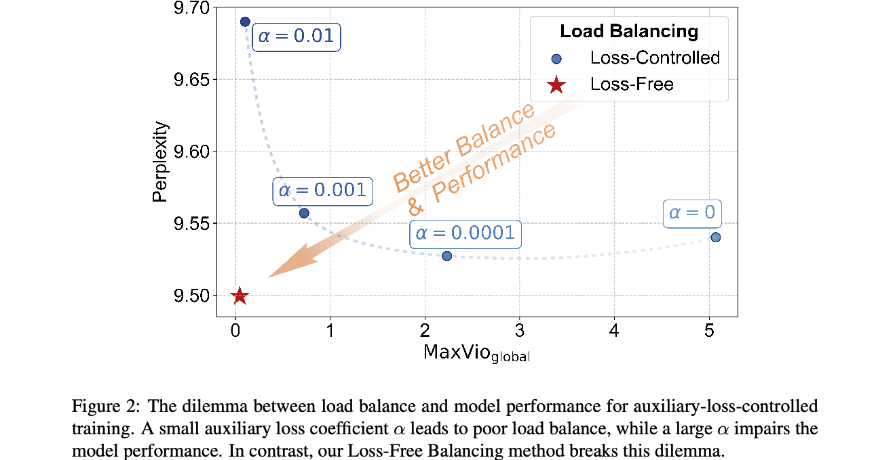
输入：MoE 模型 \(\theta\)、训练 batch 迭代器 \(B\)、偏置更新速率 \(u\)。
1. 将每个专家的 \(b_{i}\) 初始化为 0；
对 \(B\) 中的一个 batch \(\{(x_{k}, y_{k})\}_{k}\)：
2. 在 batch 数据 \(\{(x_{k}, y_{k})\}_{k}\) 上训练 MoE 模型 \(\theta\)，门控分数按照公式 (3) 计算；
3. 统计分配给每个专家的 token 数 \(c_{i}\)，以及平均数量 \(\bar{c}_{i}\)；
4. 计算负载偏离误差 \(e_{i} = \bar{c}_{i} - c_{i}\)；
4. 按照 \(b_{i} = b_{i} + u \ast sign(e_{i})\) 更新 \(b_{i}\)；
结束循环。
输出：训练后的模型 \(\theta\)，以及相应的偏置 \(b_{i}\)。
（接第 3 页）Top-k 选择：
注意，专家偏置项 \(b_{i}\) 仅通过影响 Top-k 选择来调整路由策略。在计算 MoE 层最终输出时，它不会被加到用于加权所选专家输出的 \(g_{i,t}\) 上。
为了获得合适的偏置，我们根据以下原则迭代调整每个偏置 \(b_{i}\)：当对应专家负载相对较高时降低它，反之则提高它。具体来说，对于每个 \(b_{i}\)，我们持续监测其对应专家在前一个 batch 上的负载。如果某个专家在前一个 batch 上负载较高，我们就降低它的偏置。否则，我们提高它的偏置。算法 1 描述了专家级偏置更新算法的细节。需要注意的是，我们根据历史均衡状况更新偏置，因为利用当前序列的负载信息会破坏语言建模的因果约束，导致未来 token 信息泄漏。通过动态调整偏置，我们可以实现良好的专家负载均衡，同时不会像辅助损失控制的方法那样直接向模型引入有噪声的 gradient。
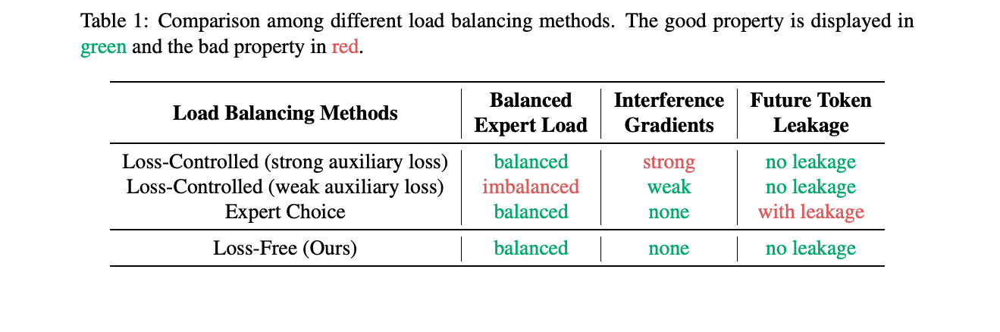
与其他负载均衡方法的比较。为了展示 Loss-Free Balancing 的理论优势，我们将其与另外两种主流负载均衡方法比较，即辅助损失控制的方法（Lepikhin et al., 2020; Fedus et al., 2021）和 Expert Choice（EC）（Zhou et al., 2022）方法。如第 2.2 节所述，辅助损失控制的方法面临负载均衡与模型性能之间的困境，而且可能不存在完美的权衡。对于 EC 方法，由于每个 token 的目标专家依赖同一序列或 batch 中的未来 token，它会破坏语言建模的因果约束。这会导致未来 token 的信息泄漏，从而破坏模型的泛化能力。表 1 总结了不同负载均衡方法的性质。
模型架构。我们采用 DeepSeekMoE（Dai et al., 2024）架构作为骨干，因为它显著优于 GShard（Lepikhin et al., 2020）等传统 MoE 架构。与 GShard（Lepikhin et al., 2020）相比，它将专家划分为更细的粒度，并分离出一部分专家作为共享专家。与 DeepSeekMoE 略有不同，在主要实验中，我们选择 sigmoid 而非 softmax 作为门控函数 \(G\)，因为我们发现 sigmoid 基线的性能优于 softmax 基线。即便如此，我们仍在附录 C 中提供了 softmax 门控的实验结果与讨论。我们的实验基于总参数量为 1B 和 3B 的两种模型规模，并且仅在 1B 规模下调整偏置更新速率。3B 规模的实验直接继承 1B 规模的最佳配置。由于篇幅限制，我们在附录 A 中提供架构的更多细节。
训练设置。我们使用 DeepSeek-AI 构建的多语言训练语料，来源于多种文本材料，包括网页文本、数学材料、代码脚本和已发表文献。我们使用 Hugging Face Tokenizer1 训练了一个词表大小为 32K 的 byte pair encoding（BPE）（Sennrich et al., 2015）tokenizer。为了得出可靠结论，我们在 100B token 上训练 1B 模型，并在 200B token 上训练 3B 模型，以确保充分训练。我们分别为 1B 和 3B 模型采用余弦学习率调度器（Loshchilov & Hutter, 2016）和多阶段学习率调度器（Dai et al., 2024）。由于篇幅限制，我们在附录 B 中列出训练设置和超参数的更多细节。
基线。我们将 Loss-Free Balancing 方法与传统辅助损失控制的方法进行比较。对于基线，我们将辅助损失系数 \(\alpha\) 设为 0.001，以在模型性能与负载均衡之间取得合理权衡（见图 2）。由于 EC 方法存在未来 token 泄漏问题，我们不将其纳入比较；我们将在第 5.2 节深入讨论这一问题。
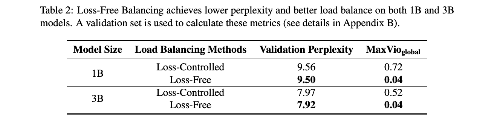
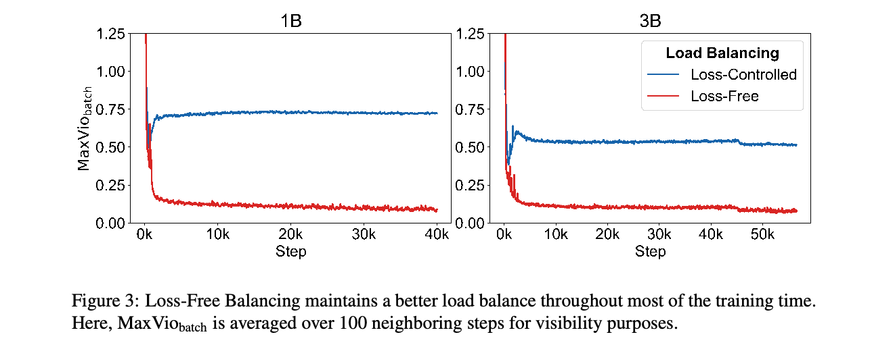
指标。我们从训练语料中保留一个验证集，用于评估模型性能和负载均衡。对于模型性能，我们以 PPL 作为指标。对于负载均衡，我们引入一个名为最大偏离（MaxVio）的指标，用于量化 MoE 层的负载均衡程度：
其中 \(Load_{i}\) 表示分配给第 \(i\) 个专家的 token 数，\(\bar{L}\bar{o}\bar{a}\bar{d}_{i}\) 表示完全负载均衡下的期望专家负载。
MaxVio 有两个变体：\(MaxVio_{global}\) 和 \(MaxVio_{batch}\)。对于 \(MaxVio_{global}\)，我们在整个验证集上统计 \(Load_{i}\)，因此它反映了专家利用的均衡程度，以及 batch 大小接近上限时的效率上界。对于 \(MaxVio_{batch}\)，我们在每个训练 batch 上统计 \(Load_{i}\)，因此它与训练效率的关系更密切。为简便起见，在本文其余部分，我们报告所有层的 MaxVio 平均值，将其作为整个模型的负载均衡度量。
表 2 展示了使用辅助损失或我们的无辅助损失负载均衡策略训练的 1B 和 3B MoE 模型的验证 PPL 与 \(MaxVio_{global}\)。如表所示，与辅助损失控制的方法相比，Loss-Free Balancing 在 1B 和 3B 模型上均实现了更好的 PPL，以及好得多的全局负载均衡。此外，为展示训练过程中的负载均衡状况，我们在图 3 中给出了随训练步数变化的 \(MaxVio_{batch}\) 负载均衡曲线，证明了 Loss-Free Balancing 在负载均衡方面持续存在的优势。总之，我们的 Loss-Free Balancing 方法避免了训练中的干扰 gradient，并有效控制负载均衡，打破了 MoE 训练中负载均衡与模型性能之间的困境。
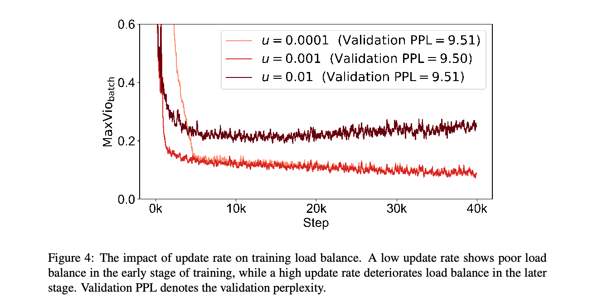
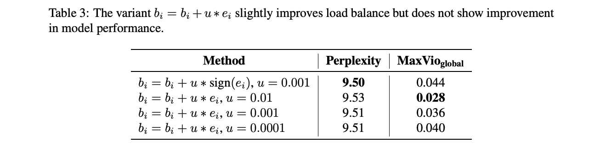
我们对偏置更新算法的更新速率及其变体开展实证研究，以验证主要实验中使用的最优配置。
更新速率。算法 1 中的更新速率 \(u\) 控制专家偏置 \(\{b_{i}\}^{N}_{i=1}\) 收敛到“合适偏置”的速度。图 4 表明，过低的更新速率 \(u = 0.0001\) 可能导致收敛缓慢，而不必要地过高的更新速率 \(u = 0.01\) 则会在训练后期造成专家偏置 \(b_{i}\) 的不期望波动，使这一阶段的负载均衡恶化。这两种情况都会损害性能。一个合适的选择是 \(u = 0.001\)，它表现出良好的训练均衡和验证 PPL。
更新规则。我们研究了一种不同的专家级偏置更新规则。具体来说，我们尝试将更新规则从 \(b_{i} = b_{i} + u \ast sign(e_{i})\) 改为 \(b_{i} = b_{i} + u \ast e_{i}\)，从而促使偏离误差较大的专家更快地改变偏置。尽管这一变体略微改善了负载均衡，但如表 3 所示，它并未带来更好的性能。因此，我们保留使用 sign 的版本。
乘法偏置。除了将专家级偏置加到门控分数上，使用乘法偏置也是一种潜在变体：
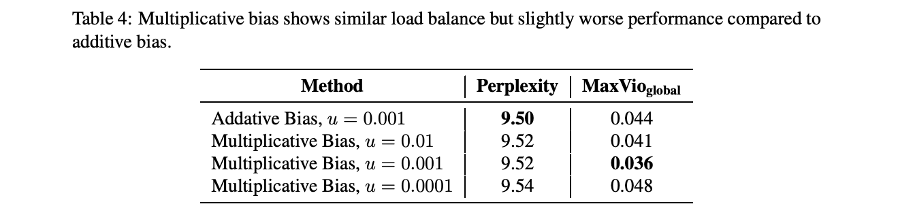
这些 \(\{b_{i}\}^{N}_{i=1}\) 可以使用与算法 1 相似的过程更新，只是它们应初始化为 1 而非 0。表 4 表明，与加法偏置相比，使用乘法偏置会使模型性能略差，同时没有显著改善负载均衡。基于这些发现，我们认为加法偏置更适合我们的方法。
超大规模 MoE 模型常采用 EP（Lepikhin et al., 2020）进行训练或推理，将专家分布在不同设备上以降低内存需求。在这种场景下，单个计算步骤中数据的负载均衡对效率至关重要。由于 EP，每个计算步骤涉及 micro_batch_size * ep_data_parallel_size 个样本，我们将其称为一个计算 batch。这里，micro_batch_size 表示单个设备上一个 gradient 累积步骤处理的样本数。
Loss-Free Balancing 可以实现接近最优的全局负载均衡，而且随着计算 batch 大小增加，每个计算步骤的负载均衡会更加接近全局负载均衡。在图 5 中，我们使用 \(MaxVio_{computation-batch}\) 指标检查计算 batch 层面的负载均衡。结果表明，我们的 Loss-Free Balancing 的负载均衡随着计算 batch 大小增加而持续改善，而当计算 batch 较大时，辅助损失控制方法的负载均衡大致维持在恒定水平。由于 EP 会将计算 batch 大小显著增加至 ep_data_parallel_size 倍，Loss-Free Balancing 天然兼容大规模 MoE 训练，并且其负载均衡优势会随着 EP 规模增大而进一步增强。
对于因果语言模型，负载均衡方法必须遵守语言建模的因果约束，以避免未来 token 泄漏。传统辅助损失控制的均衡方法和我们的 Loss-Free Balancing 都遵守这一约束，而 Expert Choice（EC）（Zhou et al., 2022）违反了它。EC 通过为每个专家分配完全相同数量的 token 来确保完美的负载均衡。然而，这种方法天然会造成严重的未来 token 泄漏问题。
在 EC 中，未来 token 可以影响先前 token 的专家分配。图 6 说明了信息如何通过这种影响轻易地在序列内部传递。从理论上说，一个稀疏比例为 \(R\)（每个 token 平均激活的专家数 \(K\) 除以专家总数 \(N\)）的 MoE 层，其 token 分配可以泄漏超过 \(K log_{2}((1 - R) / R)\) bit/token 的信息（证明见附录 D.1）。对于一个具有 9 个 MoE 层、16 个专家、每个 token 平均激活 2 个专家的模型，这相当于 50 bit，足以让每个 token 确定其后继 token 的身份。
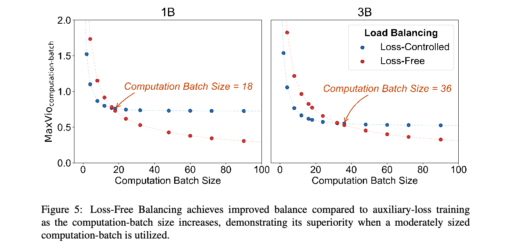
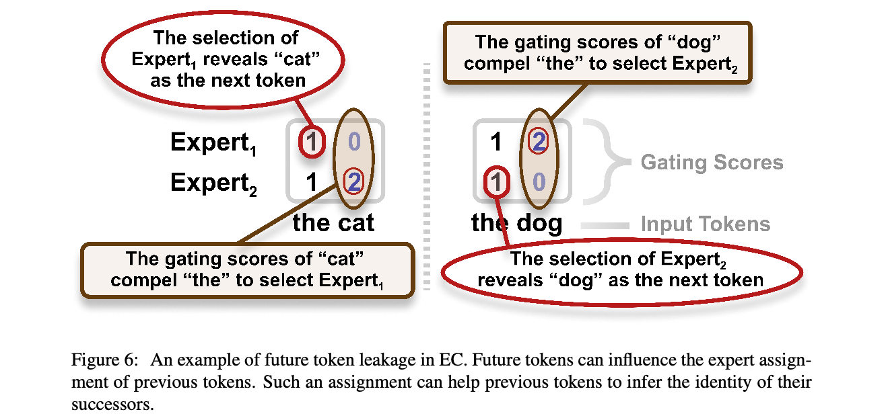
我们设计了实验，以证明实际模型训练中存在未来 token 泄漏。（1）我们将执行 Top-k 选择所用的 chunk 大小从 8192 token（4 个句子）减少至 512 token（1/4 个句子），期望借此暴露这种泄漏。我们观察到了异常的损失下降（约 10%），确认了泄漏的存在。（2）我们在 Top-k 选择步骤中将 token 打乱到不同 chunk 中，使泄漏更难被利用，并观察到异常损失下降得到缓解。关于 EC 信息泄漏的详细实验结果见附录 D.2。
未来 token 泄漏是致命的，因为它破坏模型的泛化能力，并阻碍对模型性能进行可靠评估。因此，与 EC 相比，使用我们的 Loss-Free Balancing 扩大 MoE 模型规模更安全。
本工作提出了 Loss-Free Balancing，这是一种新的 MoE 负载均衡控制方法，不引入辅助损失的 gradient。Loss-Free Balancing 解决了传统辅助损失负载均衡控制的问题：传统方法会在训练过程中引入额外的 gradient，并且在强制实现负载均衡时可能损害模型性能。在分别使用 100B 和 300B token 训练的 1B 和 3B MoE 模型上开展的实验表明，与传统辅助损失训练相比，Loss-Free Balancing 实现了更好的模型性能和负载均衡。
原文核对：本段原文写作 300B；摘要、第 2 页、第 5 页和附录 B 均写作 200B。此处保留原文数值。
Damai Dai, Chengqi Deng, Chenggang Zhao, Runxin Xu, Huazuo Gao, Deli Chen, Jiashi Li, Wangding Zeng, Xingkai Yu, Yu Wu, Zhenda Xie, Y. K. Li, Panpan Huang, Fuli Luo, Chong Ruan, Zhifang Sui, and Wenfeng Liang. DeepSeekMoE：迈向 MoE 语言模型的极致专家专门化（Deepseekmoe: Towards ultimate expert specialization in mixture-of-experts language models）. ArXiv, abs/2401.06066, 2024. URL https://api.semanticscholar.org/CorpusID:266933338.
DeepSeek-AI, Qihao Zhu, Daya Guo, Zhihong Shao, Dejian Yang, Peiyi Wang, Runxin Xu, Y. Wu, Yukun Li, Huazuo Gao, Shirong Ma, Wangding Zeng, Xiao Bi, Zihui Gu, Hanwei Xu, Damai Dai, Kai Dong, Liyue Zhang, Yishi Piao, Zhibin Gou, Zhenda Xie, Zhewen Hao, Bing-Li Wang, Jun-Mei Song, Deli Chen, Xin Xie, Kang Guan, Yumei You, Aixin Liu, Qiushi Du, Wenjun Gao, Xuan Lu, Qinyu Chen, Yaohui Wang, Chengqi Deng, Jiashi Li, Chenggang Zhao, Chong Ruan, Fuli Luo, and Wenfeng Liang. DeepSeek-Coder-V2：突破代码智能领域闭源模型的壁垒（Deepseek-coder-v2: Breaking the barrier of closed-source models in code intelligence）. ArXiv, abs/2406.11931, 2024. URL https://api.semanticscholar.org/CorpusID:270562723.
William Fedus, Barret Zoph, and Noam M. Shazeer. Switch Transformers：以简单高效的稀疏性扩展至万亿参数模型（Switch Transformers: Scaling to trillion parameter models with simple and efficient sparsity）. J. Mach. Learn. Res., 23:120:1–120:39, 2021. URL https://api.semanticscholar.org/CorpusID:231573431.
Dmitry Lepikhin, HyoukJoong Lee, Yuanzhong Xu, Dehao Chen, Orhan Firat, Yanping Huang, Maxim Krikun, Noam M. Shazeer, and Z. Chen. GShard：利用条件计算和自动分片扩展巨型模型（Gshard: Scaling giant models with conditional computation and automatic sharding）. ArXiv, abs/2006.16668, 2020. URL https://api.semanticscholar.org/CorpusID:220265858.
Ilya Loshchilov and Frank Hutter. SGDR：带 warm restart 的随机 gradient 下降（Sgdr: Stochastic gradient descent with warm restarts）. arXiv: Learning, 2016. URL https://api.semanticscholar.org/CorpusID:14337532.
Rico Sennrich, Barry Haddow, and Alexandra Birch. 使用子词单元的罕见词神经机器翻译（Neural machine translation of rare words with subword units）. ArXiv, abs/1508.07909, 2015. URL https://api.semanticscholar.org/CorpusID:1114678.
Zhihong Shao, Damai Dai, Daya Guo, Bo Liu, and Zihan Wang. DeepSeek-V2：强大、经济且高效的 MoE 语言模型（Deepseek-v2: A strong, economical, and efficient mixture-of-experts language model）. ArXiv, abs/2405.04434, 2024. URL https://api.semanticscholar.org/CorpusID:269613809.
Noam M. Shazeer, Azalia Mirhoseini, Krzysztof Maziarz, Andy Davis, Quoc V. Le, Geoffrey E. Hinton, and Jeff Dean. 超大规模神经网络：稀疏门控的 MoE 层（Outrageously large neural networks: The sparsely-gated mixture-of-experts layer）. ArXiv, abs/1701.06538, 2017. URL https://api.semanticscholar.org/CorpusID:12462234.
Ashish Vaswani, Noam M. Shazeer, Niki Parmar, Jakob Uszkoreit, Llion Jones, Aidan N. Gomez, Lukasz Kaiser, and Illia Polosukhin. Attention 即你所需（Attention is all you need）. In Neural Information Processing Systems, 2017. URL https://api.semanticscholar.org/CorpusID:13756489.
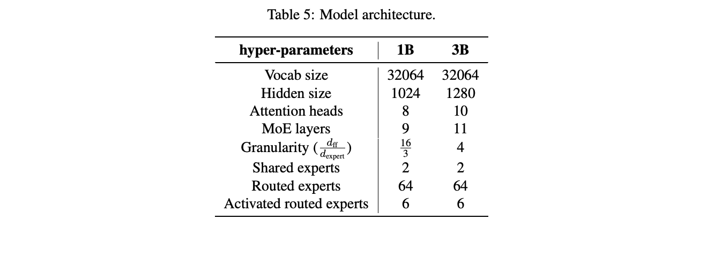
Yan-Quan Zhou, Tao Lei, Han-Chu Liu, Nan Du, Yanping Huang, Vincent Zhao, Andrew M. Dai, Zhifeng Chen, Quoc V. Le, and James Laudon. 采用 Expert Choice 路由的 MoE（Mixture-of-experts with expert choice routing）. ArXiv, abs/2202.09368, 2022. URL https://api.semanticscholar.org/CorpusID:247011948.
我们采用 DeepSeekMoE（Dai et al., 2024）架构作为骨干，它引入共享专家，以缓解路由专家之间的知识冗余：
其中 \(r\) 表示路由专家，\(s\) 表示共享专家。DeepSeekMoE 将所有 FFN 层替换为 MoE 层，只有紧接输入 embedding 层之后的稠密 FFN 层除外。
详细的架构超参数列于表 5。
遵循 Dai et al.（2024）的工作，我们以 0.006 的标准差初始化所有可学习参数，并将最大训练序列长度设为 2048。
对于 1B 模型，我们采用带 warmup 的余弦学习率调度器，将学习率设为 1e-3，最小学习率设为 1e-4，warmup 步数设为 1000。1B 模型的训练 batch 大小设为 1152，总计进行 40000 个训练步骤（100B token）。
对于 3B 模型，我们使用多阶段学习率调度器，阶段步数为 [45211, 50862, 56514]，对应的阶段学习率为 [7.8e-4, 2.47e-4, 7.8e-5]。3B 模型的 warmup 步数设为 2000。我们为 3B 模型采用 1728 的训练 batch 大小，总计进行 56514 个训练步骤（200B token）。
用于验证时，我们从训练语料中留出约 70M token 作为验证集（30 * 1B_batch_size * max_seq_len = 20 * 3B_batch_size * max_seq_len = 71M token）。
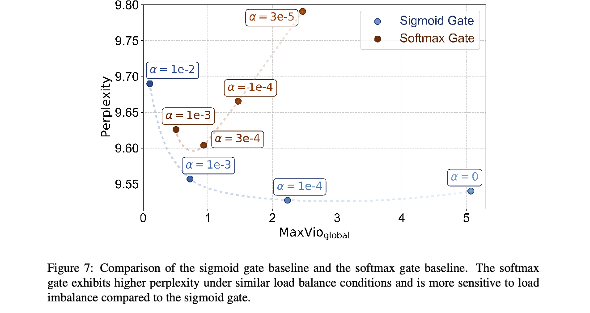
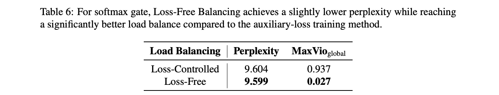
我们在 1B 规模模型上，通过改变辅助损失系数 \(\alpha\)，比较 sigmoid 门控基线和 softmax 门控基线。如图 7 所示，在相似的负载均衡条件下，softmax 门控表现出更高的 PPL，并且与 sigmoid 门控相比，其性能对负载不均衡更敏感。
由于 softmax 的归一化性质会使两个专家之间的分数差受其他专家分数影响，调整 softmax 门控的专家级偏置更加困难。在这种情况下，我们选择 \(b_{i} = b_{i} + u \ast e_{i}\) 变体来维持负载均衡，其中 \(u\) 设为 1e-3。对于基线，我们选择 \(\alpha = 0.0003\)，它使 softmax 门控达到最低 PPL。结果见表 6，表明与辅助损失训练方法相比，Loss-Free Balancing 实现了略低的 PPL，同时维持显著更好的负载均衡。图 8 确认了 Loss-Free Balancing 在大部分训练过程中保持更好的负载均衡。
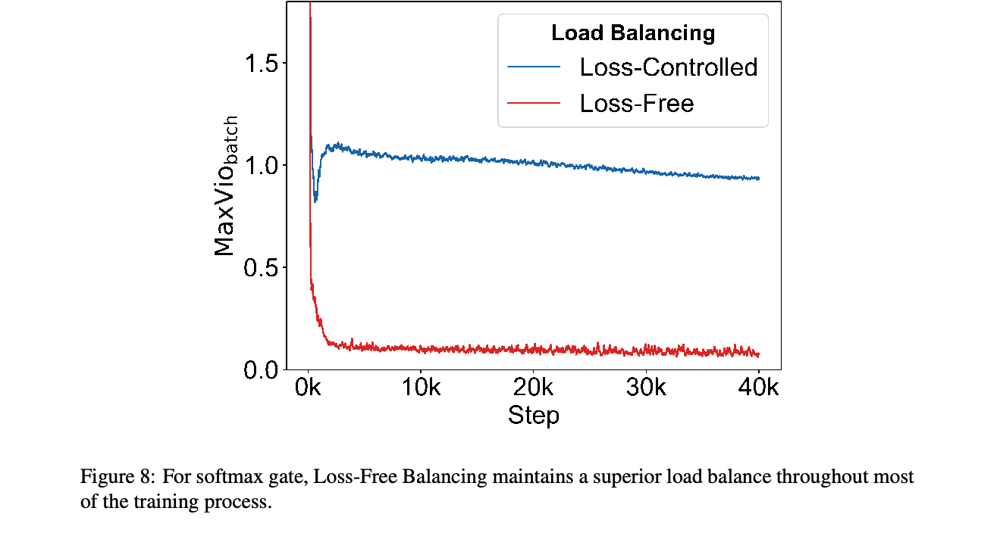
设 \(R = K / N\) 表示 MoE 的稀疏比例。这里 \(K\) 表示每个 token 平均激活的专家数量，\(N\) 是专家总数。对于 Expert Choice 中的一个 MoE 层，最大信息泄漏量 \(I\)（以 bit/token 为单位），即路由分配组合所能携带的信息为：
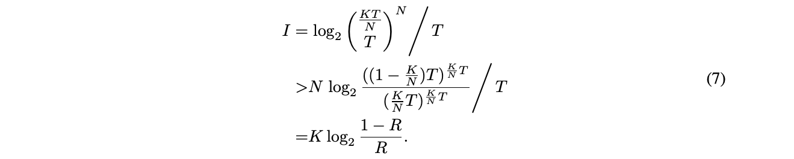
对于一个稀疏比例为 \(R = 2 / 16 = 0.125\)、具有 9 个 MoE 层的模型，总泄漏信息超过 50 bit/token。
我们通过改变专家 Top-k 选择使用的 chunk 大小，研究 Expert Choice 潜在的未来 token 泄漏；chunk 大小从 512 token 到 8192 token 不等。2 我们在 100B token 上训练一个 2B MoE 模型。表 9 中展示的结果揭示了两个关键发现：
原文核对：此处原文写作“Table 9”，对应的实验曲线实际为下一页的图 9。
2 chunk 大小为 2048 token，表示在一个句子内部执行 Top-k 选择；512 token 对应四分之一个句子，8192 token 对应四个句子。
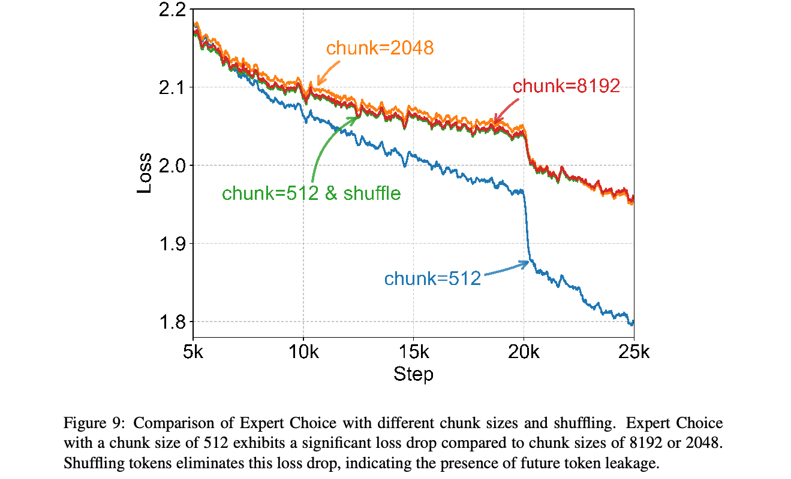